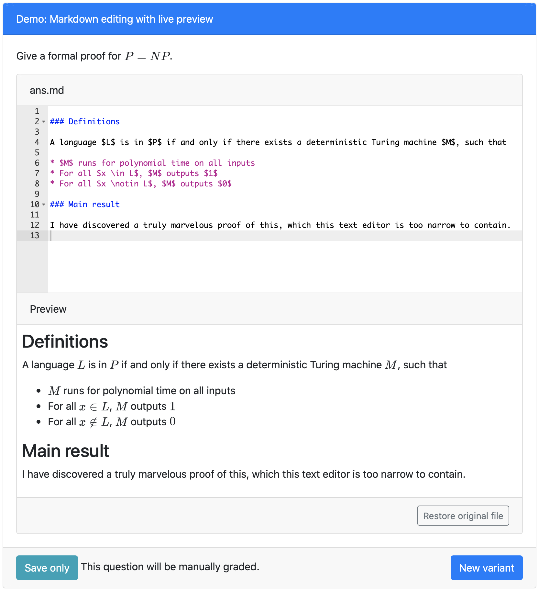

Thanks to Nicolas Nytko (CS BS '19, CS MS '21), the pl-file-editor element now supports live preview for students answering questions in Markdown with LaTeX equations. To use live preview, set preview="markdown" like this:
<pl-file-editor file-name="ans.md" ace-mode="ace/mode/markdown" preview="markdown">
</pl-file-editor>
When students type their answers in the text editor their file will be saved as Markdown for grading. This works especially well with the new manual grading feature.
The Markdown preview updates in real time as the student types. It's so fast that it feels like magic! Here's an example:
